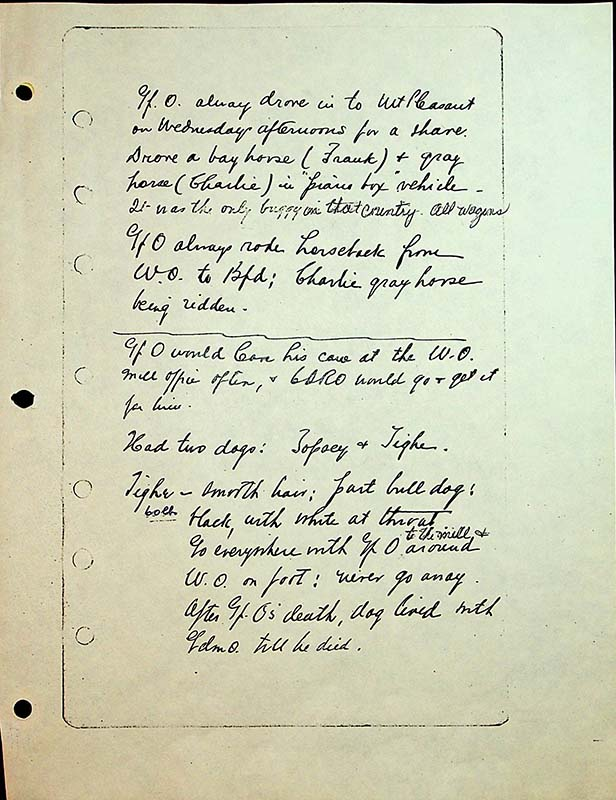

Gf. O. drove in to Mt. Pleasant on Wednesday afternoons for a shave.
Drove a bay horse (Frank) & gray horse (Charlie) in “piano box” vehicle. It was the only buggin in that country. All wagons [sic].
Gf O aways rode horseback from W.O. to Bfd. Charlie gray horse being ridden.
Gf O would leave his can at the W.O. mill office often, & CSRO would go & get it for him. Had two dogs: Topsey & Tigher
Tigher- both- smooth hair; part bull dog; black, with white at throat
Go everywhere with Gf O to the mill & around W.O. on foot; never go away.
After Gf O’s death, dog lived with Gm O. till he died.